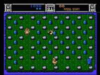

|

Review
Game Type: Overhead View Action

You play a triceratops and must race around a maze to gather eggs and
avoid the cavemen (Trogs) out to eat you. If you get tired of your place in
the food chain you can snatch a pineapple and transform into a T-Rex. This
game sound familiar yet?
Gameplay: 60/100
It's great that the developers want to spruce up the old Pac-Man
formula, and they do so successfully with the extra mazes and two player
simultanous game. But you can only make so many additions before the rock-solid
gameplay becomes watered down. It's annoying to have to avoid the edges
of the maze (you can fall off the sides), and that task is made all the
more difficult by all the speed powerups strewn about. Some enemy types
like the bouncing Trogs just don't work into the game very well. And
worst of all, that all-important aspect of Pac-Man, avoiding the enemies,
is no longer necessary. Why dodge a Trog when you can just walk up and
punch him?
Graphics: 90/100
The graphics are done in that simplistic style that suits the NES so
well. The characters and enemies have all kinds of cute animations (Trogs
belch after devouring your character, etc.). There's also a bit of
variety in scenery as you progress between mazes. Not bad.
Sound: 70/100
The tunes aren't exactly addictive but they're appropriately cute.
The sound effects are decent but aren't especially noteworthy either.
Overall: 70/100
Pac-Man is definitely the right game to copy, Trog just does it in
the wrong way. It's too bad; this game had a great deal of potential.
Less can be more - drop a couple of enemy types and the punches and you'd
have a classic.
|